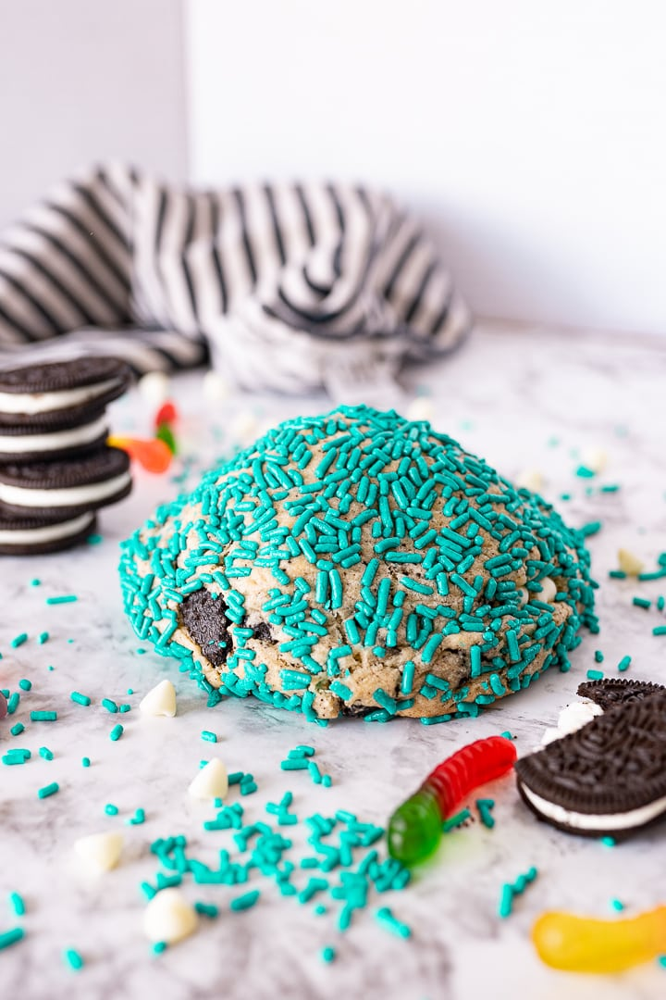

Dirty Worm Cookies

Description
A brown sugar cookie filled with white chocolate chips,
Oreo bits, stuffed with a cookies and cream frosting and
with a gummy worm thrown in for good measure. It might
sound strange but this cookie is one not to be missed!
I have made tens of thousands of cookies in my life!
Every kind of cookie, Brown Sugar Poptart cookies, Orange
Creamsicle cookies. When it comes to unique cookie recipes,
I am your source! So when Brad from Fat and Weird Cookies
reached out to me, I knew I had to try their cookies and
make a copycat.
Fat and Weird cookies have absolutely HUGE 1 pound cookies.
But it isn’t just their size that makes them different from
the pack! Fat and Weird lives up to their name with super
wacky but somehow perfect cookie flavors. Like this Dirty
Worm cookie! A brown sugar cookie Cookies and Cream cookie,
stuffed with white chocolate chips, Oreo pieces and filled
with a cookies and cream frosting and a gummy worm randomly
stuffed in there, and topped with teal sprinkles…because
everything is better with some sparkle!
Ingredients
Cookies and Cream Frosting Core
- 1 tbsp vegetable shortening
- 1 tbsp salted butter
- 3/4 cup powdered sugar
- 3 oreos finely chopped
- 1/4 tsp vanilla extract
- 1 tbsp heavy cream
- 2 gummy worms
Cookie Base
- 1/2 cup butter
- 1/3 cup brown sugar
- 3 tbsp granulated sugar
- 1 egg
- 1 tsp vanilla
- 2 cups all purpose flour
- 1 tsp baking powder
- 1/2 tsp salt
- 1/2 cup white chocolate chips
- 6 oreos roughly chopped
- Teal sprinkles
Steps
- Start by making the cookies and cream core. In a small
bowl using an electric hand mixer cream together the
shortening and butter until mixed thoroughly.
- Add the powdered sugar, vanilla and heavy cream. Mix
until combined and thick. If you need, you can add a
little bit more heavy cream to bring the frosting together.
You want it really thick.
- Fold in the chopped oreos.
- Portion the frosting out into 4 equal sized mounds.
- Place a gummy worm on the top of two of the mounds and then
take the remaining mounds and sandwich the gummy worm into
the center of the frosting core.
- Place the frosting cores in the freezer until needed.
- For the cookie dough, using a stand mixer or electric hand
mixer, cream together the butter, brown sugar and sugar until
light in color and fluffy in texture.
- Scrape the sides of the bowl and add in the egg and vanilla.
Mix until combined.
- Add the flour, baking powder and salt. Mix until the dough forms.
- Lastly, mix in the white chocolate chips and oreos until well combined.
- Split the dough into two halves.
- Flatten one half and then place a frozen frosting core in the
center of the dough and then wrap the dough around the frosting
core. Repeat with the second cookie.
- Dip and press the top part of the cookie dough into a bowl of
teal sprinkles and place on your cookie sheet.
- Place the cookie dough in the freezer while you heat the oven.
- Heat the oven to 350° F.
- Once the oven has reached temperature, pull the cookies out
of the freezer and bake for 20-22 minutes.
- The cookie should keep the same shape pretty well, the bottom
will expand just slightly, but the final cookie should look
extremely round and fat.
- Allow the cookie to cool on the pan for 30 minutes before
cutting and serving.
Original Recipe